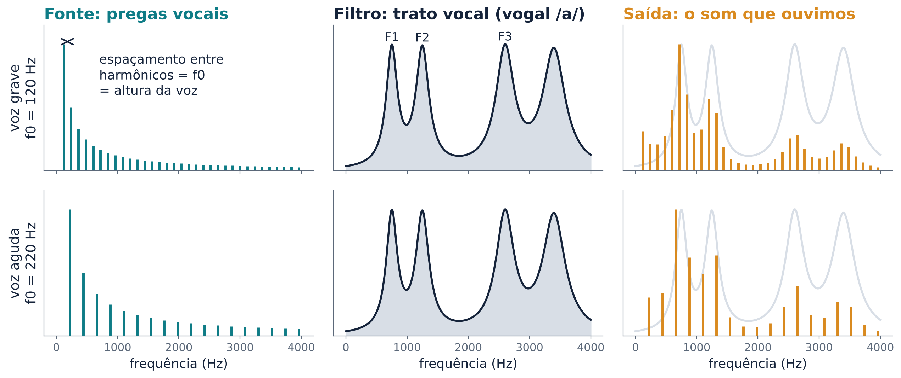
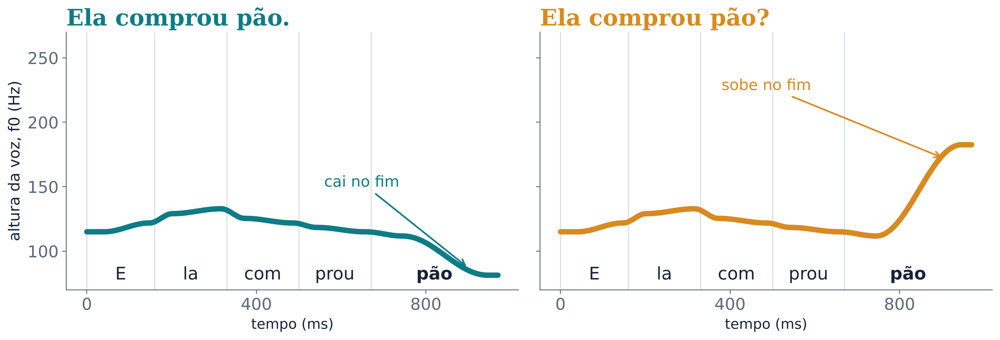
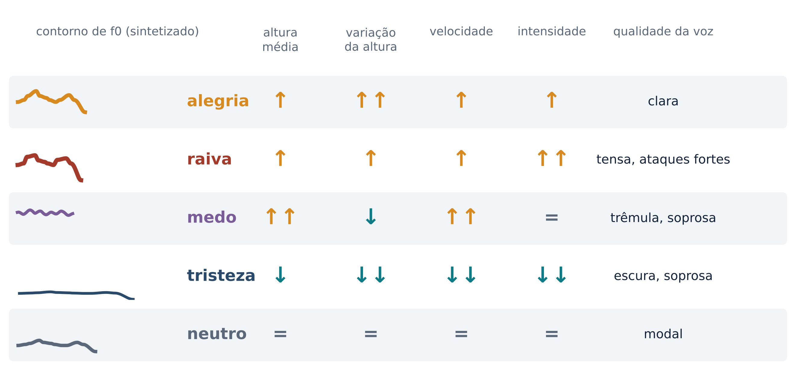
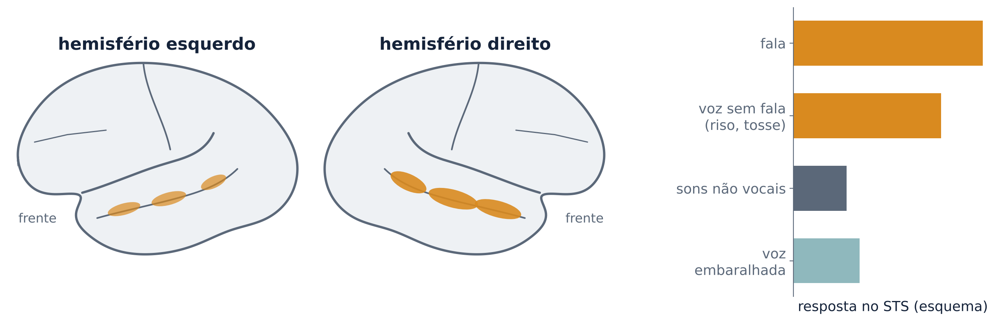
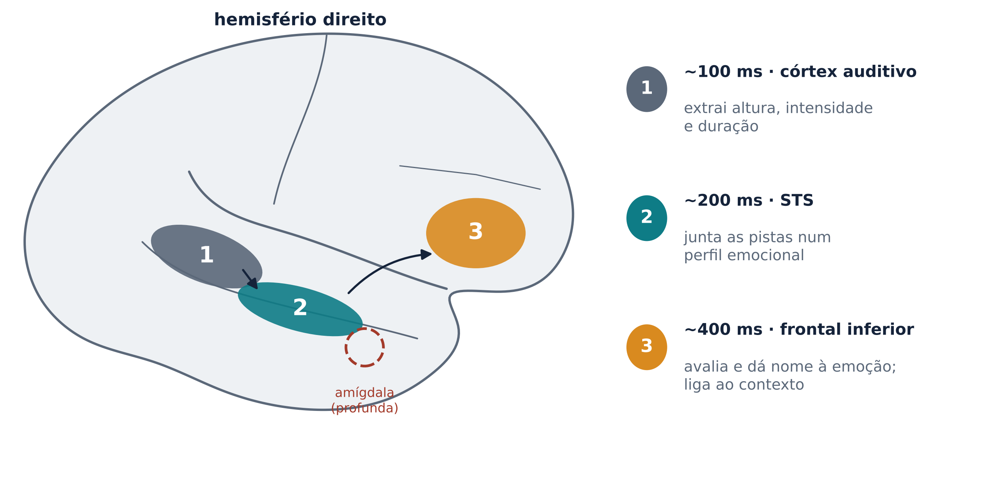
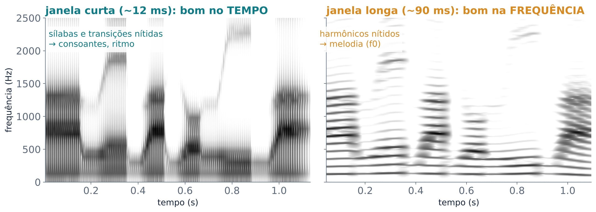

Como o cérebro ouve quem fala e com que emoção, além do que é dito
Diga em voz alta “Que bom que você veio” duas vezes: uma com sinceridade e outra com ironia. As palavras são as mesmas; o que mudou foi a melodia. A fala tem duas camadas. Os segmentos (consoantes e vogais, os fonemas da aula 3) dizem o que foi dito. A prosódia, que se estende sobre sílabas, palavras e frases, diz como foi dito e, muitas vezes, quem disse e em que estado está. Esta aula é sobre essa segunda camada.
A voz nasce na laringe. O ar que sai dos pulmões faz as pregas vocais (antes chamadas “cordas vocais”) vibrarem. Esse som de origem é a fonte. Ele passa pela faringe, pela boca e pelo nariz, que funcionam como um filtro: as cavidades acima da laringe dão ao som a sua forma final. As faixas de frequência reforçadas por essas cavidades são os formantes, que, como vimos na aula 3, distinguem as vogais. Essa descrição é a teoria fonte-filtro, aceita de forma geral para a produção da fala (Mildner, 2008).
A frequência com que as pregas vocais vibram é a frequência fundamental (f0). O som da fonte também contém harmônicos, que são múltiplos inteiros da f0: se a f0 é 100 Hz, há energia em 200, 300, 400 Hz e assim por diante (Mildner, 2008). Percebemos a f0 como a altura da voz: mais grave ou mais aguda. Valores típicos são cerca de 120 Hz num homem adulto, 220 Hz numa mulher adulta e 330 Hz numa criança de 10 anos (Mildner, 2008).
A Figura 1 mostra a consequência mais importante desse modelo. Uma voz grave e uma voz aguda podem dizer a mesma vogal. Os formantes ficam no mesmo lugar, porque o filtro é o mesmo; mas os harmônicos ficam mais próximos ou mais espaçados, porque a fonte mudou. Por isso podemos separar qual vogal (filtro) de qual altura (fonte). A prosódia trabalha sobretudo com a fonte.

A prosódia é feita sobretudo da combinação de três propriedades: altura (tom), duração e intensidade. As línguas usam cada uma em graus diferentes, e a pausa também pode funcionar como recurso prosódico (Mildner, 2008). Paulmann (2016) acrescenta a velocidade da fala e a qualidade da voz, que pode ser clara ou áspera, por exemplo.
Essas pistas servem a funções diferentes. A prosódia linguística muda o significado da palavra ou da frase (Paulmann, 2016; Mildner, 2008). No acento lexical, as mesmas sílabas viram palavras diferentes: sábia, sabia, sabiá. Na entonação, a melodia transforma afirmação em pergunta. No foco, o destaque muda a informação: “EU comprei” responde a “quem comprou?”, e “eu COMPREI” responde a “você comprou ou ganhou?”. Mildner (2008) dá um exemplo do inglês: a frase John was early ganha quatro sentidos diferentes conforme a palavra destacada e a melodia final.
A prosódia emocional revela o estado, a atitude e o humor de quem fala (Mildner, 2008). Paulmann (2016) resume uma associação comum: uma voz elevada costuma ser ligada a quem está com raiva, e uma voz mais baixa, a quem está triste. Muitas vezes as funções aparecem juntas na mesma frase. Segundo Paulmann (2016), é justamente isso que torna difícil estudar a prosódia no cérebro.
Paulmann (2016) usa um exemplo do inglês: You finished writing the chapter. vira You finished writing the chapter? só porque a voz sobe ou não sobe. Em português acontece algo parecido. “Ela comprou pão.” e “Ela comprou pão?” podem ter exatamente as mesmas palavras. O que muda é a melodia do fim (Figura 2). Diga as duas em voz alta e repare na última sílaba. Em pacientes com dificuldade de entonação, as perguntas soam erradas justamente porque a f0 varia pouco; para Mildner (2008), a variação da f0 costuma ser o indicador mais direto do tipo de frase.

A fala também tem um pulso. A energia do som sobe e desce a cada sílaba, e essa curva de energia ao longo do tempo é o envelope da fala. Quando se mede com que frequência o envelope oscila, encontra-se um pico entre 4 e 6 Hz em várias línguas, isto é, algo como quatro a seis sílabas por segundo (Gross; Poeppel, 2019). No córtex auditivo, oscilações elétricas na faixa teta (4 a 8 Hz) se alinham a esse ritmo. Esse alinhamento, chamado de entrainment (arrastamento), faria o cérebro “amostrar” a fala contínua em pedaços do tamanho de sílabas (Gross; Poeppel, 2019).
O ritmo silábico tem paralelos em outros primatas. Quando macacos-rhesus fazem o estalar de lábios (lip-smacking), lábios, língua e partes da laringe se movem num ritmo de cerca de 5 Hz (Fischer; Hage, 2019).
A prosódia não é um enfeite da fala. Ela muda o significado das palavras (acento), o tipo de frase (pergunta ou afirmação), a informação em foco e, sobretudo, o recado emocional. Quando ela falta, como numa mensagem de texto, quem lê precisa adivinhar o tom.
Cada emoção muda o corpo, e o corpo muda a voz. Banse e Scherer (1996) mediram os perfis acústicos de diferentes emoções expressas pela voz, isto é, como cada emoção muda as propriedades físicas do som. Uma meta-análise de Juslin e Laukka (2003), que reuniu 104 estudos de expressão vocal e também estudos de execução musical, encontrou semelhanças entre os dois canais. Nos dois, cada emoção é comunicada com uma precisão parecida e com um padrão próprio de pistas acústicas.
A Figura 3 mostra uma versão simplificada desses padrões. São os mesmos parâmetros usados pelo sintetizador do laboratório. Nela, alegria, raiva e medo deixam a voz mais aguda e a fala mais rápida. A alegria varia muito a altura; a raiva é forte e tensa; o medo é agudo, mas com pouca variação e trêmulo. A tristeza faz o contrário: voz grave, monótona, lenta, fraca e soprosa.
O que distingue uma emoção não é uma única pista, mas a combinação delas. Na figura, medo e alegria têm em comum a voz aguda e a fala rápida e diferem na variação da altura e na qualidade da voz. Por isso é fácil confundir as duas quando se ouve só a voz.

Muito acima do acaso, mas longe da perfeição. Scherer, Banse e Wallbott (2001) usaram gravações de atores profissionais alemães expressando raiva, tristeza, medo, alegria ou voz neutra. As frases eram sem sentido e sem língua definida, para que só a voz contasse. Ouvintes de nove países, na Europa, nos Estados Unidos e na Ásia, escolheram a emoção. A média geral foi de 66% de acertos, variando de 74% na Alemanha a 52% na Indonésia. Os erros, porém, foram muito parecidos em todos os países. Em geral, o acerto caiu à medida que a língua do ouvinte se afastava do alemão. A conclusão dos autores é dupla. Há regras comuns para ler a emoção na voz, mas padrões próprios de cada língua e cultura também influenciam a leitura.
O mesmo vale para vocalizações sem palavras, como gritos e risos. Sauter e colegas (2010) compararam ouvintes ocidentais com moradores de aldeias isoladas da Namíbia. As vocalizações das chamadas emoções básicas (raiva, nojo, medo, alegria, tristeza e surpresa) foram reconhecidas nos dois sentidos: entre culturas, e não só dentro de cada uma. Outras emoções, sobretudo as positivas, só foram reconhecidas dentro da própria cultura (Sauter et al., 2010).
Assim como há regiões que preferem rostos (aula 8), há regiões que preferem vozes. Belin e colegas (2000) usaram ressonância magnética funcional (fMRI, que mede mudanças de fluxo sanguíneo ligadas à atividade neural) enquanto voluntários ouviam sons. Regiões ao longo da borda superior do sulco temporal superior (STS), nos dois hemisférios, responderam mais a sons vocais do que a sons do ambiente. Isso valia para sons vocais com fala e sem fala. As regiões centrais do STS responderam mais à voz do que a versões “embaralhadas” da mesma voz. Os autores compararam essas áreas temporais de voz às áreas de rostos do córtex visual (Belin et al., 2000). A Figura 4 resume a ideia.

Essas regiões fazem parte da via auditiva ventral, que segue do córtex auditivo para a frente, ao longo do lobo temporal, e trata de o que é o som (Rauschecker; Scott, 2016). O reconhecimento de quem fala foi ligado a áreas temporais anteriores. A “área de voz” humana, nessa parte anterior, analisa detalhes espectrais de cada falante (Rauschecker; Scott, 2016). Em macacos, foi encontrada uma “região de voz” na parte anterior do giro temporal superior direito, e uma região de voz também foi descrita no córtex auditivo de cães (Rauschecker; Scott, 2016). Os mesmos autores lembram que, na clínica, a compreensão da fala e a discriminação de vozes podem se separar: uma pode falhar enquanto a outra continua normal.
A identidade vocal depende de várias pistas acústicas. A altura média é uma delas; ela já separa, em média, homens, mulheres e crianças (Mildner, 2008). Mas a altura sozinha não basta: duas mulheres podem ter a mesma f0 e vozes bem diferentes, por causa do timbre, do ritmo e do sotaque.
O reconhecimento de vozes começa cedo. DeCasper e Fifer (1980) deram a recém-nascidos uma chupeta especial: conforme o jeito de sugar, o bebê ouvia a voz da própria mãe ou a de outra mulher. Os bebês aprenderam a sugar do jeito que produzia a voz da mãe.
Quando o reconhecimento de vozes falha, fala-se em fonagnosia: a pessoa ouve bem, entende as palavras, mas não sabe de quem é a voz. É o espelho da prosopagnosia da aula 8. Garrido e colegas (2009) descreveram o primeiro caso de fonagnosia do desenvolvimento, isto é, presente desde sempre e sem lesão cerebral visível. KH, uma profissional de 60 anos com audição normal, ia mal ao reconhecer vozes famosas e ao aprender vozes novas, mas ia bem em quase todo o resto: reconhecer emoções na voz, perceber a fala, reconhecer rostos, música e sons do ambiente. Para os autores, reconhecer quem fala usa mecanismos separáveis dos que extraem outras informações da voz.
Os estudos de lesão sugeriam que a emoção na voz seria assunto do hemisfério direito, mas os estudos de imagem não confirmaram isso de forma consistente. Schirmer e Kotz (2006) propuseram uma saída: tratar a compreensão da emoção na voz como um processo de várias etapas. Essa cadeia sai da via auditiva ventral e chega a estruturas ligadas à cognição e à emoção, com mecanismos nos dois hemisférios. Paulmann (2016) resume uma versão desse tipo de modelo, com tempos aproximados (Figura 5):

As evidências de tempo vêm do eletroencefalograma (EEG), que registra a atividade elétrica do cérebro com precisão de milissegundos. Paulmann e Kotz (2008) registraram potenciais evocados enquanto as pessoas ouviam frases ditas por vozes femininas e masculinas. Frases emocionais já se distinguiam das neutras cerca de 200 ms depois do início, numa onda positiva chamada P200. Isso acontece muito antes de a frase terminar (Paulmann, 2016). Ou seja: o cérebro começa a classificar o tom de voz antes de a pessoa ter tempo de pensar sobre ele. Etapas posteriores aparecem em ondas mais tardias. Um exemplo é a onda N400, maior quando a palavra e o tom não combinam, como “feliz” dito com voz de raiva (Paulmann, 2016).
A amígdala é um pequeno conjunto de núcleos na parte interna do lobo temporal, ligado à avaliação emocional. Ela também participa da leitura da voz. Num estudo de escuta dicótica, as pessoas ouviam pseudopalavras ditas com raiva ou de forma neutra, um som em cada ouvido, e prestavam atenção a um só lado. A amígdala direita e o STS dos dois lados responderam à raiva tanto no ouvido atendido quanto no ignorado. Já o córtex orbitofrontal respondeu mais quando a pessoa prestava atenção (Sander et al., 2005; Paulmann, 2016). Outro estudo do mesmo grupo encontrou mais atividade na parte média do STS, nos dois lados, para a raiva do que para a voz neutra (Grandjean et al., 2005; Paulmann, 2016).
Esses achados ajudam a entender por que um grito no corredor interrompe a aula: parte da avaliação do tom de voz acontece mesmo quando a atenção está em outro lugar. Mas isso não quer dizer que a amígdala seja “o centro” da emoção na voz. Ela é uma peça de uma rede que inclui o córtex auditivo, o STS, o córtex frontal e estruturas subcorticais (Paulmann, 2016).
Heilman, Scholes e Watson (1975) testaram seis pacientes com lesão temporoparietal direita e seis com lesão esquerda. Todos entenderam perfeitamente o conteúdo das frases. Mas, ao julgar o humor de quem falava (alegre, triste, com raiva ou indiferente), os pacientes com lesão direita foram bem pior. Ross (1981) examinou dez pacientes com lesão do hemisfério direito. Ele propôs que esses distúrbios, as aprosodias, se organizam como as afasias do hemisfério esquerdo: haveria, por exemplo, uma aprosodia “motora” e uma “global”. Na mesma linha, Mildner (2008) relata que produzir e compreender a prosódia exige partes do hemisfério direito que correspondem às áreas clássicas da linguagem do esquerdo.
Como é a fala desses pacientes? Plana e monótona, com pouca variação de altura e de duração, às vezes com qualidade “robótica”. Eles costumam saber que a voz não expressa o que sentem: o problema está em expressar e ler a emoção pela voz, e não em sentir a emoção (Mildner, 2008).
Mas a história não é tão simples, e a área discorda. Paulmann (2016) e Mildner (2008) listam várias hipóteses:
Os dados não confirmam nenhuma delas na forma pura. Uma meta-análise de estudos com lesões concluiu que lesões direitas causam problemas mais graves de prosódia emocional do que lesões esquerdas. Já na prosódia linguística, os dois lados prejudicam de forma parecida (Witteman et al., 2011; Paulmann, 2016). Lesões dos núcleos da base também prejudicam a prosódia emocional. Estudos de imagem mostram uma rede temporofrontal bilateral, às vezes um pouco mais forte à direita. O lado que “vence” depende da tarefa, do tipo de estímulo e do desenho do experimento (Paulmann, 2016). A conclusão mais segura é que a prosódia emocional tem predomínio direito, não exclusividade.
Uma explicação para esse predomínio vem da física do som. Não é possível analisar um som com precisão máxima no tempo e na frequência ao mesmo tempo. Uma janela de análise curta mostra bem quando cada coisa acontece, como as transições rápidas das consoantes. Uma janela longa mostra bem as frequências, como os harmônicos que definem a melodia (Figura 6).
Estudos de lesão e de pessoas saudáveis sugerem que o hemisfério esquerdo é mais envolvido com aspectos temporais do som, como sequência e duração, e o direito com aspectos espectrais, como a altura e a estrutura de harmônicos (Mildner, 2008). A hipótese da amostragem assimétrica no tempo dá uma forma a essa ideia. O córtex auditivo esquerdo teria mais grupos de neurônios que integram o som em janelas curtas, ligadas ao ritmo gama; o direito, mais grupos que integram em janelas longas, ligadas ao ritmo teta. Assim, o esquerdo seria melhor para o nível dos fonemas, e o direito, para o das sílabas e para sinais que mudam devagar, como música e vozes (Arnal; Poeppel; Giraud, 2016).
Albouy e colegas (2020) testaram a ideia com frases cantadas em que letra e melodia eram combinadas de todas as formas. Eles filtravam do som ou a informação temporal ou a espectral (de frequência). Quando degradavam a informação temporal, as pessoas pioravam no reconhecimento da letra, mas não da melodia. Quando degradavam a espectral, pioravam na melodia, mas não na letra. Na fMRI, a letra dependia de padrões de atividade no córtex auditivo esquerdo, e a melodia, no direito (Albouy et al., 2020). Como a prosódia emocional depende muito da altura, faz sentido que use mais o lado que analisa a frequência com mais detalhe. Mas é uma diferença de grau, não uma divisão absoluta.

Em muitas línguas, a altura faz parte da palavra. No mandarim, a sílaba ma tem quatro significados conforme o tom: alto e plano (“mãe”), ascendente (“cânhamo”), descendente-ascendente (“cavalo”) e descendente (“xingar”). O cantonês tem seis tons (Gandour; Krishnan, 2016).
Se o hemisfério direito fosse simplesmente “o lado da altura”, os tons deveriam ser processados à direita. Não é o que acontece. Gandour e colegas (2000) pediram a falantes de tailandês, de chinês e de inglês que discriminassem tons do tailandês. Só os falantes de tailandês ativaram o opérculo frontal esquerdo, perto da área de Broca, embora o som fosse o mesmo para todos. Para os autores, a altura é processada de acordo com a função que tem na língua de quem ouve. Estudos posteriores mostraram o mesmo padrão: a altura usa mais o hemisfério esquerdo quando marca o significado da palavra e mais o direito quando não marca (Gandour; Krishnan, 2016). A experiência com a língua muda até o tronco encefálico, antes do córtex. Falantes de chinês representam com mais fidelidade as mudanças rápidas de altura típicas dos tons (Gandour; Krishnan, 2016). O que decide o lado, portanto, não é só a acústica, mas também a função que o som tem na língua de quem ouve.
Adultos que não falam uma língua tonal conseguem aprender os tons. Wang e colegas (1999) treinaram oito americanos em oito sessões, ao longo de duas semanas, a identificar os quatro tons do mandarim. A identificação melhorou em média 21%, o ganho se estendeu a palavras e vozes novas e continuava presente seis meses depois.
Fala e música compartilham altura e ritmo. Uma demonstração famosa é a ilusão da fala que vira canção, de Diana Deutsch. Deutsch, Henthorn e Lapidis (2011) tocaram uma frase falada dez vezes seguidas, e os ouvintes julgaram se ela soava como fala ou como canto. Quando as repetições eram idênticas, os julgamentos passaram claramente de “fala” para “canto”. Isso não acontecia quando as repetições do meio eram levemente transpostas (um pouco mais agudas ou mais graves) ou tinham as sílabas embaralhadas.
Por que a repetição exata faz a fala “cantar”? Ainda se discute. O fato de a fala poder virar música também não quer dizer que as duas usem os mesmos circuitos. O resultado de Albouy e colegas (2020), com a letra mais à esquerda e a melodia mais à direita, mostra que a mesma canção é dividida entre os hemisférios conforme o tipo de informação.
O riso, o choro e o grito de dor são vocalizações emocionais. Hage e Nieder (2016) propuseram um modelo de duas redes para a produção vocal em primatas. A primeira é um gerador de padrões vocais no tronco encefálico, acionado por uma rede límbica e controlado em grande parte pelo estado afetivo do animal. Ela produz os chamados típicos da espécie, de estrutura pouco variável. A segunda é uma rede cortical, que inclui o córtex pré-frontal ventrolateral e áreas pré-motoras e motoras. Ela dá controle voluntário sobre quando vocalizar e modula os chamados (Fischer; Hage, 2019). Segundo o modelo, a ligação crescente entre o córtex pré-frontal e o sistema vocal foi um passo-chave na evolução da fala (Hage; Nieder, 2016; Fischer; Hage, 2019). O reconhecimento entre culturas das vocalizações de emoções básicas (Sauter et al., 2010) combina com a ideia de uma base antiga.
Mas mesmo essa base antiga se desenvolve na interação social. Os saguis (Callithrix jacchus), macacos do Novo Mundo, vivem em grupos familiares. Quando se separam, filhotes e adultos emitem chamados que ajudam a restabelecer o contato, e o chamado de um costuma provocar resposta do outro (Fischer; Hage, 2019). Ao longo do desenvolvimento, os chamados mudam muito: a frequência e a desordem acústica diminuem, e a duração aumenta. Essas mudanças não se explicam só pelo crescimento do corpo. Respostas contingentes dos pais, isto é, respostas que vêm logo depois dos chamados do filhote, aceleram a passagem para os chamados maduros (Takahashi et al., 2015; Fischer; Hage, 2019). Num outro estudo, filhotes com menos retorno dos pais também chegaram aos chamados adultos, mas continuaram a produzir comportamentos vocais típicos de filhote (Fischer; Hage, 2019).
As vozes emocionais têm raízes antigas, comuns a muitos primatas. Mas a forma madura da voz, nos saguis e provavelmente em nós, é moldada pelas respostas de quem está ao redor.
No Laboratório de Prosódia, todas as vozes foram sintetizadas no celular, com sílabas sem sentido, como fala ouvida do outro lado da parede. Assim só sobrava a prosódia. Os números da turma variam; o que importa é o padrão.
Experimento 1 · Pergunta ou afirmação? Sete passos levavam a última sílaba de uma queda clara a uma subida clara. A diferença física entre passos vizinhos era sempre a mesma. Se a percepção acompanhasse a física, as respostas mudariam aos poucos. Se a turma viu uma curva em forma de S, com os primeiros passos soando como afirmação, os últimos como pergunta e uma virada perto do meio, isso sugere que usamos a melodia final como uma categoria linguística, de modo parecido com o /ba/–/da/ da aula 3.
Experimento 2 · Que emoção é essa? O sintetizador só mudava altura média, variação da altura, velocidade, intensidade e qualidade da voz (os parâmetros da Figura 3). Ainda assim, o esperado é acertar bem acima do acaso (3 em 15). Nos estímulos, tristeza e raiva ficam nos extremos de quase todos os parâmetros, e por isso devem ser as mais fáceis. Medo e alegria são ambas agudas e rápidas, e por isso tendem a se confundir. Compare com os 66% obtidos com vozes reais de atores (Scherer; Banse; Wallbott, 2001).
Experimento 3 · Tons do mandarim. Mesmo sem nunca ter estudado chinês, é comum acertar acima do acaso (3 em 12) desde o primeiro bloco, porque os contornos são acusticamente diferentes. A melhora do primeiro para o segundo bloco, com retorno, mostra o começo de um aprendizado que, com treino, pode ir longe (Wang et al., 1999). A confusão típica é entre o tom 2 (ascendente) e o tom 3 (descendente-ascendente), que sobem no fim. Para quem ouviu sem falar a língua, os tons foram melodias; para um falante nativo, são parte da palavra, e o processamento usa mais o hemisfério esquerdo (Gandour; Krishnan, 2016).
Experimento 4 · Uma frase, cinco emoções. Com vozes reais, há mais pistas (respiração, risadinhas, ritmo) e também mais variação entre pessoas. Quando o voluntário descreve o que fez com a voz, a descrição costuma repetir a Figura 3: “falei mais alto”, “mais devagar”, “mais agudo”.
Experimento 5 · Fala que vira canção. O esperado é que mais gente ouça canto nas repetições idênticas do que nas transpostas, como em Deutsch, Henthorn e Lapidis (2011). Como a voz sintética já soa um pouco musical, o efeito pode ser mais fraco do que com a gravação original.
Duas pessoas, uma de voz grave e outra de voz aguda, dizem a vogal /a/. O que muda e o que fica igual no som das duas, segundo o modelo fonte-filtro?
Resposta
A fonte muda: a voz aguda tem f0 mais alta, e os harmônicos ficam mais espaçados. O filtro fica igual, porque o trato vocal assume a mesma forma para /a/; por isso os formantes ficam no mesmo lugar e ouvimos a mesma vogal.
Dê um exemplo de prosódia linguística e um de prosódia emocional na mesma frase em português.
Resposta
“Ela comprou pão?” com subida no fim é prosódia linguística: transforma afirmação em pergunta. A mesma frase dita lenta, grave e monótona comunica tristeza: é prosódia emocional. As duas podem aparecer juntas.
Por que medo e alegria se confundem mais do que raiva e tristeza?
Resposta
Medo e alegria compartilham voz aguda e fala rápida; diferem em pistas mais sutis, como a variação da altura e a qualidade da voz. Raiva e tristeza ficam em lados opostos de quase todas as pistas (intensidade, velocidade, altura), por isso são fáceis de separar.
O estudo de Scherer, Banse e Wallbott (2001) encontrou 74% de acertos na Alemanha e 52% na Indonésia. O que esse resultado diz sobre a emoção na voz ser universal?
Resposta
Os dois valores estão bem acima do acaso e os erros foram parecidos em todos os países, o que indica regras comuns. Mas a queda com a distância em relação ao alemão mostra que padrões próprios de cada língua e cultura também afetam a leitura.
Por que um grito no corredor chama a atenção mesmo de quem está concentrado em outra coisa? Use o modelo em etapas e a amígdala na resposta.
Resposta
As pistas acústicas são extraídas em cerca de 100 ms e já têm valor emocional por volta de 200 ms (P200), antes de qualquer reflexão. A amígdala e o STS respondem à raiva mesmo quando a atenção está em outro lugar, o que sinaliza relevância.
“A prosódia fica no hemisfério direito.” O que está certo e o que está errado nessa frase?
Resposta
Está certo que lesões direitas costumam prejudicar mais a prosódia emocional e que o lado direito parece mais fino para a frequência. Está errado como regra geral: a prosódia linguística é prejudicada por lesões dos dois lados, os núcleos da base participam e a rede é bilateral, com predomínio que depende da tarefa.
Por que falantes de tailandês ativam o hemisfério esquerdo ao comparar tons que, para falantes de inglês, não ativam essa região?
Resposta
Para quem fala tailandês, o tom é parte da palavra, uma unidade da língua como uma vogal, e é tratado pela rede da linguagem, mais à esquerda. Para quem não fala, é só uma melodia. O lado depende da função do som na língua do ouvinte, não só da acústica.
O que os saguis mostram sobre a relação entre vocalizações “inatas” e aprendizado social?
Resposta
Os chamados dos filhotes mudam muito com a idade, mas não só por causa do crescimento: respostas contingentes dos pais aceleram a passagem para os chamados adultos, e filhotes com pouco retorno mantêm comportamentos de filhote. A base é antiga, mas a forma madura é moldada pela interação.
ALBOUY, P. et al. Distinct sensitivity to spectrotemporal modulation supports brain asymmetry for speech and melody. Science, v. 367, n. 6481, p. 1043-1047, 2020. DOI: https://doi.org/10.1126/science.aaz3468.
ARNAL, L. H.; POEPPEL, D.; GIRAUD, A.-L. A neurophysiological perspective on speech processing in “The Neurobiology of Language”. In: HICKOK, G.; SMALL, S. L. (org.). Neurobiology of language. London: Academic Press, 2016. p. 463-478. DOI: https://doi.org/10.1016/B978-0-12-407794-2.00038-9.
BANSE, R.; SCHERER, K. R. Acoustic profiles in vocal emotion expression. Journal of Personality and Social Psychology, v. 70, n. 3, p. 614-636, 1996. DOI: https://doi.org/10.1037/0022-3514.70.3.614.
BELIN, P. et al. Voice-selective areas in human auditory cortex. Nature, v. 403, n. 6767, p. 309-312, 2000. DOI: https://doi.org/10.1038/35002078.
DeCASPER, A. J.; FIFER, W. P. Of human bonding: newborns prefer their mothers’ voices. Science, v. 208, n. 4448, p. 1174-1176, 1980. DOI: https://doi.org/10.1126/science.7375928.
DEUTSCH, D.; HENTHORN, T.; LAPIDIS, R. Illusory transformation from speech to song. The Journal of the Acoustical Society of America, v. 129, n. 4, p. 2245-2252, 2011. DOI: https://doi.org/10.1121/1.3562174.
FISCHER, J.; HAGE, S. R. Primate vocalization as a model for human speech: scopes and limits. In: HAGOORT, P. (org.). Human language: from genes and brains to behavior. Cambridge, MA: The MIT Press, 2019. p. 639-656.
GANDOUR, J. et al. A crosslinguistic PET study of tone perception. Journal of Cognitive Neuroscience, v. 12, n. 1, p. 207-222, 2000. DOI: https://doi.org/10.1162/089892900561841.
GANDOUR, J. T.; KRISHNAN, A. Processing tone languages. In: HICKOK, G.; SMALL, S. L. (org.). Neurobiology of language. London: Academic Press, 2016. p. 1095-1107. DOI: https://doi.org/10.1016/B978-0-12-407794-2.00087-0.
GARRIDO, L. et al. Developmental phonagnosia: a selective deficit of vocal identity recognition. Neuropsychologia, v. 47, n. 1, p. 123-131, 2009. DOI: https://doi.org/10.1016/j.neuropsychologia.2008.08.003.
GRANDJEAN, D. et al. The voices of wrath: brain responses to angry prosody in meaningless speech. Nature Neuroscience, v. 8, n. 2, p. 145-146, 2005. DOI: https://doi.org/10.1038/nn1392.
GROSS, J.; POEPPEL, D. Neural oscillations and their role in speech and language processing. In: HAGOORT, P. (org.). Human language: from genes and brains to behavior. Cambridge, MA: The MIT Press, 2019. p. 393-407.
HAGE, S. R.; NIEDER, A. Dual neural network model for the evolution of speech and language. Trends in Neurosciences, v. 39, n. 12, p. 813-829, 2016. DOI: https://doi.org/10.1016/j.tins.2016.10.006.
HEILMAN, K. M.; SCHOLES, R.; WATSON, R. T. Auditory affective agnosia: disturbed comprehension of affective speech. Journal of Neurology, Neurosurgery, and Psychiatry, v. 38, n. 1, p. 69-72, 1975. DOI: https://doi.org/10.1136/jnnp.38.1.69.
JUSLIN, P. N.; LAUKKA, P. Communication of emotions in vocal expression and music performance: different channels, same code? Psychological Bulletin, v. 129, n. 5, p. 770-814, 2003. DOI: https://doi.org/10.1037/0033-2909.129.5.770.
MILDNER, V. The cognitive neuroscience of human communication. New York: Lawrence Erlbaum Associates, 2008.
PAULMANN, S. The neurocognition of prosody. In: HICKOK, G.; SMALL, S. L. (org.). Neurobiology of language. London: Academic Press, 2016. p. 1109-1120. DOI: https://doi.org/10.1016/B978-0-12-407794-2.00088-2.
PAULMANN, S.; KOTZ, S. A. Early emotional prosody perception based on different speaker voices. NeuroReport, v. 19, n. 2, p. 209-213, 2008. DOI: https://doi.org/10.1097/WNR.0b013e3282f454db.
RAUSCHECKER, J. P.; SCOTT, S. K. Pathways and streams in the auditory cortex: an update on how work in nonhuman primates has contributed to our understanding of human speech processing. In: HICKOK, G.; SMALL, S. L. (org.). Neurobiology of language. London: Academic Press, 2016. p. 287-298. DOI: https://doi.org/10.1016/B978-0-12-407794-2.00024-9.
ROSS, E. D. The aprosodias: functional-anatomic organization of the affective components of language in the right hemisphere. Archives of Neurology, v. 38, n. 9, p. 561-569, 1981. DOI: https://doi.org/10.1001/archneur.1981.00510090055006.
SANDER, D. et al. Emotion and attention interactions in social cognition: brain regions involved in processing anger prosody. NeuroImage, v. 28, n. 4, p. 848-858, 2005. DOI: https://doi.org/10.1016/j.neuroimage.2005.06.023.
SAUTER, D. A. et al. Cross-cultural recognition of basic emotions through nonverbal emotional vocalizations. Proceedings of the National Academy of Sciences of the United States of America, v. 107, n. 6, p. 2408-2412, 2010. DOI: https://doi.org/10.1073/pnas.0908239106.
SCHERER, K. R.; BANSE, R.; WALLBOTT, H. G. Emotion inferences from vocal expression correlate across languages and cultures. Journal of Cross-Cultural Psychology, v. 32, n. 1, p. 76-92, 2001. DOI: https://doi.org/10.1177/0022022101032001009.
SCHIRMER, A.; KOTZ, S. A. Beyond the right hemisphere: brain mechanisms mediating vocal emotional processing. Trends in Cognitive Sciences, v. 10, n. 1, p. 24-30, 2006. DOI: https://doi.org/10.1016/j.tics.2005.11.009.
TAKAHASHI, D. Y. et al. The developmental dynamics of marmoset monkey vocal production. Science, v. 349, n. 6249, p. 734-738, 2015. DOI: https://doi.org/10.1126/science.aab1058.
WANG, Y. et al. Training American listeners to perceive Mandarin tones. The Journal of the Acoustical Society of America, v. 106, n. 6, p. 3649-3658, 1999. DOI: https://doi.org/10.1121/1.428217.
WITTEMAN, J. et al. The nature of hemispheric specialization for linguistic and emotional prosodic perception: a meta-analysis of the lesion literature. Neuropsychologia, v. 49, n. 13, p. 3722-3738, 2011. DOI: https://doi.org/10.1016/j.neuropsychologia.2011.09.028.
Material de estudo da disciplina Bases neurais da comunicação humana (UFRN), Prof. Daniel Y. Takahashi. Texto e figuras elaborados para o curso; as fontes estão nas Referências.